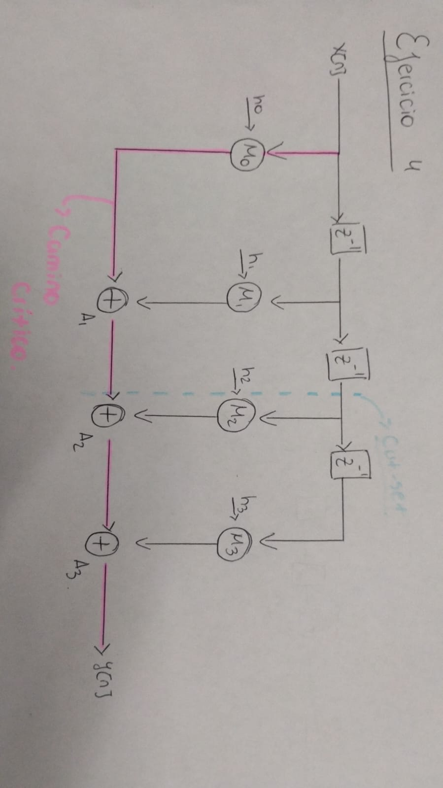

Win: definir cut-set válido, trazar tus 2 cortes, calcular el Tcrit por etapa y defender el +25% de fmax con su peaje. Base: tu README Ej. 4. ⏱ ~15–20 min.
1 · Definición operativa (decila palabra por palabra)
Un feed-forward cut-set es un conjunto de aristas que, al eliminarlas, parte el DFG en dos mitades disjuntas con todas las aristas en el mismo sentido (ninguna vuelve atrás), cumpliendo cruce único: cada camino entrada→salida atraviesa el corte exactamente una vez. Regla de aplicación: un registro por arista del corte = +1 etapa de pipeline, y la función no cambia (la salida solo se retrasa en ciclos fijos). Si el corte atravesara un lazo o un camino lo cruzara dos veces, unos datos se retrasarían más que otros y la función se rompería —por eso el FIR acíclico del Ej. 1 es el candidato ideal.
2 · Tus 2 cortes (dónde y por qué ahí)
Corte 1 — lado de los datos: a la salida del 2.º z⁻¹, antes de que se bifurque hacia M₂ y hacia el 3.er z⁻¹. Como ambas ramas nacen del mismo nodo fuente, se implementa con un único registro compartido (detalle elegante: no pagás dos registros). Retrasa la disponibilidad de x[n−2]/x[n−3] y por tanto de M₂/M₃. Corte 2 — lado de las sumas: en la arista A₁→A₂. Retrasa la cadena de acumulación. Juntos, los dos cortes dibujan una frontera coherente que divide el circuito en "etapa temprana" y "etapa tardía".
3 · Cálculo del camino crítico (el corazón del ejercicio)
Tiempos dados: Tm = 2 u.t. (multiplicador), Ta = 1 u.t. (sumador). Primero el baseline:

Sin pipeline: el camino M→A₁→A₂→A₃ vale Tm+3Ta = 5 u.t. ⇒ fmax = 1/5.
Hay una frase en tu tabla del Ej. 5 que el público va a cuestionar: "1 muestra por ciclo en régimen (pipeline lleno)". ¿Qué significa "lleno" y por qué el aclaración importa? Significa esto: con el pipeline recién arrancado (vacío), la etapa 2 no tiene nada que hacer —está en burbuja— hasta que la primera muestra termina la etapa 1 y cruza los registros de corte. Recién entonces las dos etapas trabajan a la vez sobre muestras distintas: la etapa 1 con x[n+1] mientras la etapa 2 cierra y[n]. Ese solapamiento es el pipeline "lleno".
Trazalo ciclo a ciclo para tus 2 etapas (E1 = etapa temprana, E2 = etapa tardía):
Ciclo
E1 procesa
E2 procesa
Sale y?
1
x[0]
— (vacía)
no
2
x[1]
x[0]
no (primera vez lleno)
3
x[2]
x[1]
sí: y[0]
4…
x[n+1]
x[n]
sí: uno por ciclo
Tres lecturas para tu presentación:
El llenado es el peaje pagado una sola vez: la primera salida tarda los 2 ciclos extra (el pipeline "se llena"), pero a partir de ahí sale una muestra por ciclo para siempre, mientras haya datos entrando. Por eso el throughput de régimen es 1/ciclo aunque la latencia subiera 2.
El "1 por ciclo" exige alimentación continua: si la entrada llega a rachas con huecos, el pipeline se vacía y hay que volver a llenarlo —cada hueco cuesta el transitorio de nuevo. El throughput real de una fuente esporádica es menor que el de régimen. (Tu testbench del Ej. 3 estresa exactamente esto con la fase de gaps aleatorios.)
Lleno ≠ gratis: en régimen hay 2 muestras "en vuelo" dentro del circuito a la vez —esa es la concurrencia que compraste con los 2 registros. Sin ellos, solo habría una.
Frase para decir en voz alta: "El pipeline es una inversión: pago el llenado una vez —2 ciclos hasta la primera salida— y cobro una muestra por ciclo de ahí en más, a un reloj 25% más rápido. Por eso mi tabla del Ej. 5 dice '1 muestra por ciclo lleno': el asterisco es el transitorio."
5 · Lectura crítica (qué decir si te presionan)
El pipeline no aceleró ninguna muestra: cada y[n] tarda 2 ciclos más en salir; lo que aceleró es el reloj, y con él el throughput en régimen (1 muestra/ciclo lleno a fmax mayor).
La etapa 2 manda (4 vs 3): el diseño quedó desbalanceado; un tercer corte que separe M₂ de A₂+A₃ balancearía a ~3 a cambio de más registros —mencionalo como trabajo futuro, muestra criterio.
Un corte transversal (todos los × de un lado, todos los + del otro) bajaría el Tcrit a max(Tm, 3Ta) = 3 con más registros: mismo teorema, otro compromiso.
Línea de cierre: "El cut-set feed-forward me dejó partir el camino de 5 en etapas de 3 y 4 sin tocar la función; el reloj ahora lo fija la etapa 2 en 4, un 25% más rápido, pagando 2 ciclos de latencia y 2 registros. Esa es toda la idea del pipelining."
Fuente primaria
Tu cálculo y diagramas: ej4_Cut-Set/README.md. Teoría: Parhi, pipelining de DFG feed-forward y retiming.
Autoevaluación · Ej. 4
1. Un cut-set feed-forward válido requiere…
✔ Mismo sentido + cruce único por camino ⇒ la función no cambia.